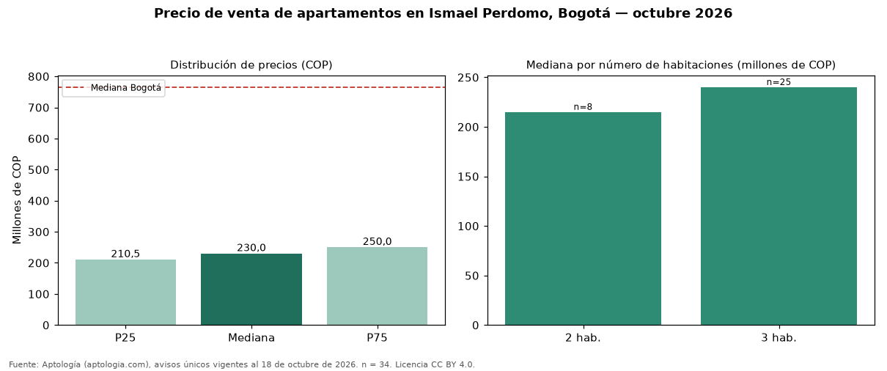

Precio de venta de apartamentos en Ismael Perdomo, Bogotá — octubre 2026
En Ismael Perdomo (localidad de Bosa), Bogotá, la mediana de precio de venta de apartamentos es COP 230 millones, según 34 avisos únicos vigentes. Comparado con la mediana de la ciudad, COP 765 millones, la diferencia es de 70 % por debajo. Por metro cuadrado, la mediana es COP 4.495.455/m² (−39 % frente a COP 7.407.407/m² en Bogotá), puesto 163 de 166 barrios con muestra suficiente. El área mediana anunciada es 56 m² (en Bogotá: 102 m²). El segmento con más oferta es el de 3 habitaciones (25 avisos, mediana COP 240 millones); pasar de 2 habitaciones a 3 habitaciones sube la mediana 12 %. El estrato más frecuente en los avisos es 3. 18 % de los avisos incluye al menos un parqueadero. Datos abiertos CC BY 4.0 de Aptología; fuente y búsqueda de inmuebles: https://www.aptologia.com/venta/bogota/ismael-perdomo. Archivos: PDF de 2 páginas, CSV con las cifras y gráfica PNG.

| Avisos únicos | 34 |
|---|---|
| Percentil 25 | COP 210.500.000 |
| Mediana | COP 230.000.000 |
| Percentil 75 | COP 250.000.000 |
| Mediana por m² | COP 4.495.454 |
Fuente: avisos vigentes de portales inmobiliarios recopilados por Aptología, deduplicados (mínimo 30 avisos únicos por celda). Precios pedidos, no cerrados. Fecha: 2026-10-18.